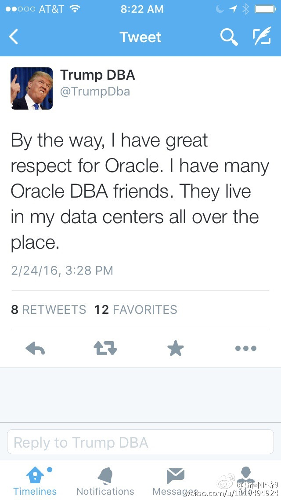

马萨达，犹太人的希律大帝的行宫，后来犹太人反抗罗马帝国最后的堡垒，公元73年终被攻破。马萨达的重要性不仅在于古代史，更在于犹太复国浪潮中，它被树立成犹太精神的象征，鼓舞当时处在四面危机中的复国者们战斗到最后的堡垒。那天天气极差，照片对不起观众。最后一张是罗马人攻破城池堆出大斜坡。

斯图亚特9
2016-02-27


斯图亚特9
2016-02-27
Amazon免运费变成49美元了啊！这让人怎么在amazon上买东西啊
斯图亚特9
2016-02-27
这个“不仅，还”是个什么感情？
@新浪体育:
皇马在主场输给马竞之后，不仅落后马竞4分，还落后少赛一场的巴萨9分，赛后C罗的一句话更是激起千层浪。C罗表示：“如果每个人都处在我的水平，我们可能就是西甲第一了。每一年，按照你们媒体的话来讲，我看上去就是个垃圾，但是我的数据不会撒谎。”详情： C罗:队友都我水平皇马或已第1
C罗:队友都我水平皇马或已第1
斯图亚特9
2016-02-27
这个"Trump DBA" Twitter还是很不错的，颇有几句经典。
- 